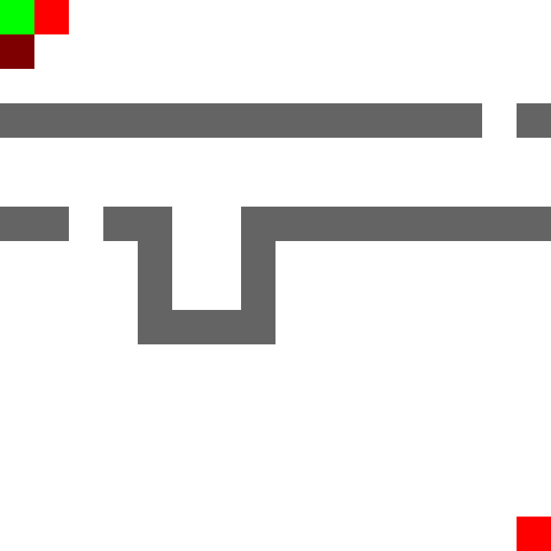

A hobby project that has been on my list since about 1994 was to figure out
Doom's (Id Software, 1993) data file format - the vaunted DOOM.WAD file. My brother
and I used to enjoy making maps with 3rd-party editing tools around 1994/5,
which was a nice way to get a grip on the 3D technology involved in the game.
When I started programming I occasionally looked at the Doom source code to see
[read more...]
This book has one goal - to help you pass a one-term computer graphics course at university that uses OpenGL for the practical side. We will learn OpenGL, master all your assignments, manage your time, and pass the exam. And no more. Specifically:

I've been extremely busy teaching and making on-the-fly a new Algorithms course at Trinity College Dublin for the 3rd-year engineering students. It's just about finished, and went pretty well. I'll post more information when I get a bit of time after end-of-year. The above animation is from a demonstration program that I wrote for the class of the A* Algorithm - a computationally efficient modification of Dijkstra's Algorithm for finding the shortest route between two nodes in a graph.
I see people talking about personal motivation strategies lately. I thought I
would share mine, because I think I come from a different perspective to most
of my peers. The similar part is that I have these two motivational
struggles:
[read more...]